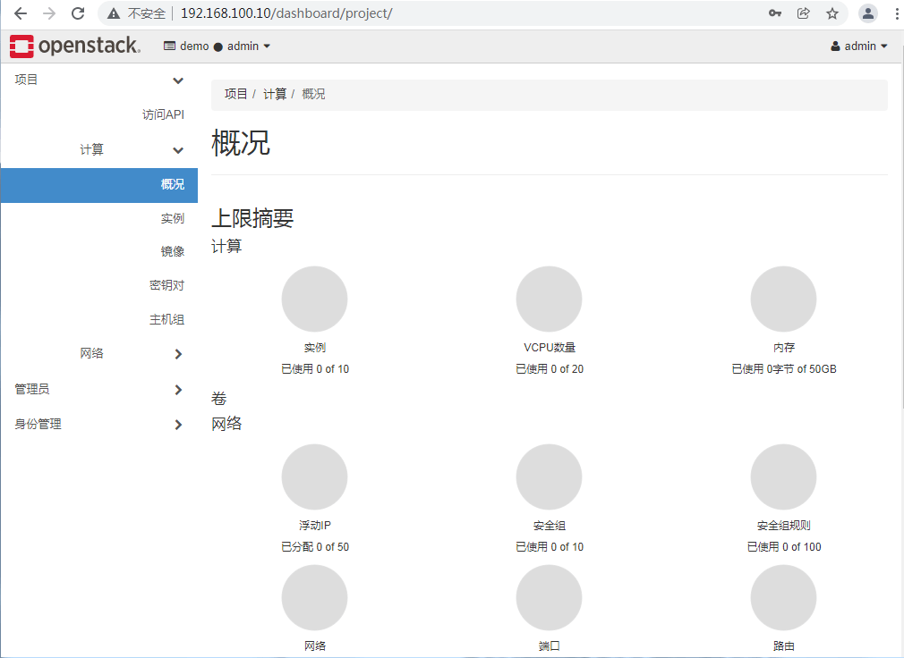
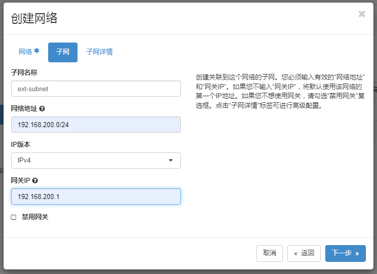

案例描述 本案例讲述了如何使用两台物理服务器部署OpenStack云平台（T版本），并在该平台上配置大赛软件训练的用户租户环境。
学生可以在如上所述的训练环境中申请云主机，练习大赛软件。使用这种训练方式，可以不需要重复对物理服务器安装系统并搭建OpenStack云平台，只需要启动云主机就可以训练，相对来说训练更加高效快捷。
案例准备 规划节点 节点规划见表1。
表1 节点规划
IP 主机名 节点
192.168.100.10
Controller
控制节点
192.168.100.20
Compute
计算节点
架构规划如图1所示。
基础准备 准备两台物理服务器和一台三层交换机，以及网线若干。
为两台物理服务器安装最小化CentOS7.9操作系统。
案例实施 网络环境配置 （1）交换机配置
为三层交换机配置vlan。以H3C-S5024-24P交换机配置为例。
新建vlan 100，为vlan 100配置IP地址为192.168.100.1，作为管理网段的网关地址，并将交换机1-8号端口加入到vlan 100中。交换机配置命令如下所示。
1 2 3 4 5 6 7 8 9 10 11 12 13 system-view System View: return to User View with Ctrl+Z. [H3C]vlan 100 [H3C-vlan100]int vlan 100 [H3C-Vlan-interface100]ip address 192.168.100.1 255.255.255.0 [H3C-Vlan-interface100]qu [H3C]int range GigabitEthernet 1/0/1 to GigabitEthernet 1/0/8 [H3C-if-range]port link-type access [H3C-if-range]port access vlan 100 [H3C-if-range]qu [H3C]sa sa fo Validating file. Please wait... Saved the current configuration to mainboard device successfully.
新建vlan 200，为vlan 200配置IP地址为192.168.200.1，作为虚拟机业务网段的网关地址，并将交换机9-16号端口配置为trunk模式，放行vlan 200（这里直接放行所有端口）。交换机配置命令如下所示。
1 2 3 4 5 6 7 8 9 10 11 12 system-view System View: return to User View with Ctrl+Z. [H3C]vlan 200 [H3C-vlan200]int vlan 200 [H3C-Vlan-interface200]ip address 192.168.200.1 255.255.255.0 [H3C-Vlan-interface200]qu [H3C]int range GigabitEthernet 1/0/9 to GigabitEthernet 1/0/16 [H3C-if-range]port link-type trunk [H3C-if-range]port trunk permit vlan all [H3C]sa sa fo Validating file. Please wait... Saved the current configuration to mainboard device successfully.
新建vlan 2，为vlan 2配置IP地址为192.168.1.1，作为训练用PC终端的网关地址，并将交换机17-24号端口加入到vlan 2中。交换机配置命令如下所示。
1 2 3 4 5 6 7 8 9 10 11 12 13 system-view System View: return to User View with Ctrl+Z. [H3C]vlan 2 [H3C-vlan2]int vlan 2 [H3C-Vlan-interface2]ip address 192.168.1.1 255.255.255.0 [H3C-Vlan-interface2]qu [H3C]int range GigabitEthernet 1/0/17 to GigabitEthernet 1/0/24 [H3C-if-range]port link-type access [H3C-if-range]port access vlan 2 [H3C-if-range]qu [H3C]sa sa fo Validating file. Please wait... Saved the current configuration to mainboard device successfully.
（2）网线连接
配置完交换机之后，就需要用网线将服务器等设备与交换机连接起来。将两台服务器的网口一连接到交换机的1-8口上；将两台服务器的网口二连接到交换机的9-16口上；学生的PC终端连接到交换机的17-24口。
（3）设备IP地址配置
连接完网线后，需要配置两台服务器和PC终端的IP地址。其中服务器只需要为网口一配置IP地址。 由于CentOS 7版本的linux系统会根据不同的主板型号与网卡设备型号，赋予网卡不同的设备名称，所以我们在配置网卡的IP地址的时候，需要特别注意相应的网卡设备对应的实际名称。 本文档以网卡一的设备名为ens33、网卡二的设备名为ens34为实例。
Controller节点服务器网卡一IP地址配置：
1 2 3 4 5 6 7 8 9 10 11 12 13 14 15 16 17 18 19 20 21 22 23 24 25 [root@localhost ~]# vi /etc/sysconfig/network-scripts/ifcfg-ens33 TYPE=Ethernet BOOTPROTO=static NAME=ens33 DEVICE=ens33 ONBOOT=yes IPADDR=192.168.100.10 NETMASK=255.255.255.0 GATEWAY=192.168.100.1 [root@localhost ~]# systemctl restart network [root@localhost ~]# ip a 1: lo: mtu 65536 qdisc noqueue state UNKNOWN group default qlen 1000 link/loopback 00:00:00:00:00:00 brd 00:00:00:00:00:00 inet 127.0.0.1/8 scope host lo valid_lft forever preferred_lft forever inet6 ::1/128 scope host valid_lft forever preferred_lft forever 2: ens33: mtu 1500 qdisc pfifo_fast state UP group default qlen 1000 link/ether 00:0c:29:07:0a:3a brd ff:ff:ff:ff:ff:ff inet 192.168.100.10/24 brd 192.168.100.255 scope global noprefixroute ens33 valid_lft forever preferred_lft forever inet6 fe80::20c:29ff:fe07:a3a/64 scope link valid_lft forever preferred_lft forever 3: ens34: mtu 1500 qdisc pfifo_fast state UP group default qlen 1000 link/ether 00:0c:29:07:0a:44 brd ff:ff:ff:ff:ff:ff
Compute节点服务器网卡一IP地址配置文件内容如下：
1 2 3 4 5 6 7 8 9 10 11 12 13 14 15 16 17 18 19 20 21 22 23 24 25 [root@localhost ~]# cat /etc/sysconfig/network-scripts/ifcfg-ens33 TYPE=Ethernet BOOTPROTO=static NAME=ens33 DEVICE=ens33 ONBOOT=yes IPADDR=192.168.100.20 NETMASK=255.255.255.0 GATEWAY=192.168.100.1 [root@localhost ~]# systemctl restart network [root@localhost ~]# ip a 1: lo: mtu 65536 qdisc noqueue state UNKNOWN group default qlen 1000 link/loopback 00:00:00:00:00:00 brd 00:00:00:00:00:00 inet 127.0.0.1/8 scope host lo valid_lft forever preferred_lft forever inet6 ::1/128 scope host valid_lft forever preferred_lft forever 2: ens33: mtu 1500 qdisc pfifo_fast state UP group default qlen 1000 link/ether 00:0c:29:99:15:8e brd ff:ff:ff:ff:ff:ff inet 192.168.100.20/24 brd 192.168.100.255 scope global noprefixroute ens33 valid_lft forever preferred_lft forever inet6 fe80::20c:29ff:fe99:158e/64 scope link valid_lft forever preferred_lft forever 3: ens34: mtu 1500 qdisc pfifo_fast state UP group default qlen 1000 link/ether 00:0c:29:99:15:98 brd ff:ff:ff:ff:ff:ff
PC终端地址设置为192.168.1.2-254地址池内任意一地址即可。配置完成后可以在PC终端使用SecureCRT远程连接软件连接到服务器节点。
OpenStack云平台部署 使用SecureCRT远程连接软件连接到服务器节点后，就可以开始部署安装OpenStack云平台。
（1）配置主机名
Controller节点：
1 2 3 [root@localhost ~]# hostnamectl set-hostname controller [root@localhost ~]# logout [root@controller ~]#
修改完成后SecureCRT退出重新连接节点。
Compute节点：
1 2 3 [root@localhost ~]# hostnamectl set-hostname compute [root@localhost ~]# logout [root@compute ~]#
修改完成后SecureCRT退出重新连接节点。
（2）配置域名解析
使用vi命令在Controller节点与Compute节点的/etc/hosts文件添加如下内容，添加完成后输入:wq保存文件内容退出。
1 2 3 4 5 6 7 8 9 [root@controller ~]# vi /etc/hosts … 192.168.100.10 controller 192.168.100.20 compute [root@compute ~]# vi /etc/hosts … 192.168.100.10 controller 192.168.100.20 compute
（3）关闭防火墙
在Controller节点与Compute节点关闭防火墙功能。
1 2 3 4 5 6 7 8 9 [root@controller ~]# systemctl stop firewalld [root@controller ~]# systemctl disable firewalld [root@controller ~]# setenforce 0 [root@controller ~]# sed -i "s/SELINUX=.*/SELINUX=disabled/" /etc/selinux/config [root@compute ~]# systemctl stop firewalld [root@compute ~]# systemctl disable firewalld [root@compute ~]# setenforce 0 [root@compute ~]# sed -i "s/SELINUX=.*/SELINUX=disabled/" /etc/selinux/config
（4）yum文件配置
将OpenStack云平台部署的镜像文件iso通过SecureCRT上传到controller节点的/root目录下。在/opt目录创建centos7-2009和iaas-train目录，将安装镜像文件内容复制到centos7-2009和iaas目录中。
1 2 3 4 5 6 7 8 9 [root@controller ~]# mkdir /opt/{centos7-2009,iaas-train} [root@controller ~]# mount /root/CentOS-7-x86_64-DVD-2009.iso /mnt/ mount: /dev/loop0 is write-protected, mounting read-only [root@controller ~]# cp -r /mnt/* /opt/centos7-2009/ [root@controller ~]# umount /mnt/ [root@controller ~]# mount /root/chinaskills_cloud_iaas_v2.0.iso /mnt/ mount: /dev/loop0 is write-protected, mounting read-only [root@controller ~]# cp -r /mnt/* /opt/iaas-train/ [root@controller ~]# umount /mnt/
配置controller节点yum安装源文件yum.repo，指向本地文件目录路径。
1 2 3 4 5 6 7 8 9 10 11 12 13 14 15 16 17 18 19 [root@controller ~]# mv /etc/yum.repos.d/* /media/ [root@controller ~]# cat /etc/yum.repos.d/yum.repo [centos] name=centos7-2009 baseurl=file:///opt/centos7-2009 gpgcheck=0 enabled=1 [openstack] name=openstack-iaas baseurl=file:///opt/iaas-train/iaas-repo gpgcheck=0 enabled=1 EOF [root@controller ~]# yum clean all && yum repolist … repo id repo name status centos centos7-2 4,070 openstack openstack-iaas 953 repolist: 5,023
在controller节点使用yum安装vsftpd服务，并将/opt目录下的文件共享出去。
1 2 3 4 5 6 7 8 [root@controller ~]# yum install -y vsftpd … Installed: vsftpd.x86_64 0:3.0.2-28.el7 Complete! [root@controller ~]# echo "anon_root=/opt" >> /etc/vsftpd/vsftpd.conf [root@controller ~]# systemctl start vsftpd [root@controller ~]# systemctl enable vsftpd
配置compute节点yum安装源文件yum.repo，指向controller节点的共享文件目录路径。
1 2 3 4 5 6 7 8 9 10 11 12 13 14 15 16 17 18 19 [root@compute ~]# mv /etc/yum.repos.d/* /media/ [root@compute ~]# cat /etc/yum.repos.d/yum.repo [centos] name=centos7-2009 baseurl=ftp://controller/centos7-2009 gpgcheck=0 enabled=1 [openstack] name=openstack-iaas baseurl=ftp://controller/iaas-train/iaas-repo gpgcheck=0 enabled=1 EOF [root@compute ~]# yum clean all && yum repolist … repo id repo name status centos centos7-2 4,070 openstack openstack-iaas 953 repolist: 5,023
（5）配置环境变量
在controller节点和compute节点安装OpenStack云平台的安装脚本软件包。
1 2 3 4 5 6 7 8 9 10 11 [root@controller ~]# yum install -y openstack-iaas … Installed: openstack-iaas.x86_64 0:v2.0.1-1.el7 Complete! [root@compute ~]# yum install -y openstack-iaas … Installed: openstack-iaas.x86_64 0:v2.0.1-1.el7 Complete!
在controller节点和compute节点配置环境变量文件/etc/openstack/openrc.sh，内容如下所示。
1 2 3 4 5 6 7 8 9 10 11 12 13 14 15 16 17 18 19 20 21 22 23 24 25 26 27 28 29 [root@controller ~]# vi /etc/openstack/openrc.sh # 修改以下内容 HOST_IP=192.168.100.10 HOST_PASS=000000 #controller节点root用户密码 HOST_NAME=controller HOST_IP_NODE=192.168.100.20 HOST_PASS_NODE=000000 #compute节点root用户密码 HOST_NAME_NODE=compute network_segment_IP=192.168.100.0/24 RABBIT_USER=openstack RABBIT_PASS=000000 DB_PASS=000000 DOMAIN_NAME=demo ADMIN_PASS=000000 DEMO_PASS=000000 KEYSTONE_DBPASS=000000 GLANCE_DBPASS=000000 GLANCE_PASS=000000 PLACEMENT_DBPASS=000000 PLACEMENT_PASS=000000 NOVA_DBPASS=000000 NOVA_PASS=000000 NEUTRON_DBPASS=000000 NEUTRON_PASS=000000 METADATA_SECRET=000000 INTERFACE_NAME=ens34 #服务器第二张网卡名称（每个节点网卡名称或有不一致） Physical_NAME=provider minvlan=1 maxvlan=1000
（6）部署OpenStack云平台基础环境
在controller节点和compute节点都执行脚本iaas-pre-host.sh部署OpenStack云平台基础环境。
1 2 [root@controller ~]# iaas-pre-host.sh [root@compute ~]# iaas-pre-host.sh
（7）部署mariadb数据库及rabbitmq消息队列服务
在controller节点执行脚本部署mariadb数据库及rabbit消息队列服务。
1 [root@controller ~]# iaas-install-mysql.sh
（8）部署keystone服务
在controller节点执行脚本部署keystone服务。
1 [root@controller ~]# iaas-install-keystone.sh
（9）部署glance服务
在controller节点执行脚本部署glance服务。
1 [root@controller ~]# iaas-install-glance.sh
（10）部署nova服务
在controller节点执行脚本部署nova组件的控制服务。
1 2 [root@controller ~]# iaas-install-placement.sh [root@controller ~]# iaas-install-nova-controller.sh
执行完上面的脚本后，在compute节点执行脚本部署nova组件的计算服务，这样就将compute节点的cpu、内存及磁盘资源添加到OpenStack云平台的资源池中了。
1 [root@compute ~]# iaas-install-nova-compute.sh
因需要最大化利用服务器的资源来练习，所以要将controller节点的资源也加入到OpenStack云平台的资源池中。首先修改controller节点的环境变量文件内容。
1 2 3 4 [root@controller ~]# vi /etc/openstack/openrc.sh # 修改以下两个变量为controller节点的信息 HOST_IP_NODE=192.168.100.10 HOST_NAME_NODE=controller
再在controller节点执行脚本部署nova组件的计算服务。（脚本会要求输入yes和controller节点root用户密码）
1 [root@controller ~]# iaas-install-nova-compute.sh
（11）部署neutron服务
在controller节点执行脚本部署neutron组件的控制服务。
1 [root@controller ~]# iaas-install-neutron-controller.sh
在compute节点执行脚本部署neutron组件的计算服务。
1 [root@compute ~]# iaas-install-neutron-compute.sh
（12）部署dashboard服务
在controller节点执行脚本部署dashboard组件服务。
1 [root@controller ~]# iaas-install-dashboard.sh
安装完成后，使用google浏览器访问OpenStack云平台，访问地址为：http://192.168.100.10/dashboard，domain为demo，用户名为admin，密码为000000。结果如图2和图3所示。
图2 OpenStack云平台dashboard访问1

图3 OpenStack云平台dashboard访问2
OpenStack云平台配置 （1）创建虚拟机网络
在左侧菜单栏中选择“管理员”-“网络”-“网络”，点击“+创建网络”按钮，填写虚拟机外网网络信息，内容如图4、图5、图6所示。最后点击“创建”，就完成了虚拟机外网网络的创建。
图4 创建网络

图5 创建网络
图6 创建网络
创建完成后的网络状态如图7所示。
图7 ext-net网络状态
（2）创建训练账号
在左侧菜单栏中选择“身份管理”-“项目”，点击“+创建项目”，创建名为CSCC001的项目，如图8所示。
图8 创建项目
在左侧菜单栏中选择“身份管理”-“用户”，点击“+创建用户”，创建名为CSCC001的用户，密码设置为000000，主项目选择CSCC001，如图9所示。
图9 创建用户
（3）配置训练账号资源配额
在左侧菜单栏中选择“身份管理”-“项目”，选择CSCC001项目功能列表（项目最右侧的三角符号），选择第四项修改配额，如图10所示。
图10 修改配额1
设置vcpu数量为16，内存大小为32768，如图11所示。修改完成后点击保存按钮。
图11 修改配额2
（4）创建云主机类型
在左侧菜单栏中选择“管理员”-“计算”-“实例类型”，点击“+创建实例类型”，可以创建自己需要的云主机大小。示例如图12所示。
图12 实例类型
（5）配置训练账号安全组规则
点击右上角的用户名admin，选择退出，在退出账号后，用新建的用户CSCC001重新登录OpenStack云平台，domain域名还是demo。
在左侧菜单栏中选择“项目”-“网络”-“安全组”，点击default安全组的“管理规则”按钮。点击“+添加规则”，需要一共添加所有TCP规则、所有UDP规则、所有ICMP规则的出口和入口规则，一共六条新规则。示例如图13所示，结果如图14所示。
图13 添加规则示例
图14 添加规则结果
（6）上传glance镜像
CRT连接controller节点，使用admin账号上传镜像，并使用参–public让镜像共享给所有项目和用户。
1 2 [root@controller ~]# source /etc/keystone/admin-openrc.sh [root@controller ~]# openstack image create --disk-format qcow2 --container-format bare --public --file /root/CentOS-7-x86_64-2009.qcow2 centos7-2009
（7）创建虚拟机
登录OpenStack云平台的dashboard平台，使用CSCC001账号登录平台后，可以创建虚拟机来作为自己训练环境使用。
在左侧菜单栏中选择“项目”-“计算”-“实例”，点击“创建实例”，输入实例名称test，默认可用域为nova，数量为1，点击下一步；选择已共享的centos7-2009镜像，点击下一步；选择实例类型（这里是实验示例，选择了1G内存的类型，可以根据训练实际需求选择类型，没有相应的实例类型就按照第4步创建新类型）点击下一步；选择ext-net为虚拟机的网络（第1张网卡必须是这个外部网络）；这样点击“创建实例”按钮就可以完成虚拟机创建。创建步骤如图15、图16、图17、图18所示。
图15 虚拟机创建1
图16 虚拟机创建2
图17 虚拟机创建3
图18 虚拟机创建3
等虚拟机创建完成后，可以看到虚拟机状态为“运行”，如图19所示；这样我们就可以在PC终端上用CRT连接到test虚拟机的地址，用户名默认为root，密码为000000。
图19 虚拟机运行
至此使用物理环境搭建云计算竞赛训练环境介绍完毕。